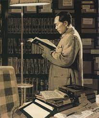

Who is Mao Zedong?
Mao Zedong was a principal Chinese Marxist theorist, soldier, and statesman who led his country’s communist revolution. He was born on December 26, 1893, in Shaoshan, Hunan province, China and died on September 9, 1976, Beijing. Mao was the Chinese Communist Party (CCP) leader from 1935 until his death, and he was the People's Republic of China's chairman (chief of state) from 1949 to 1959.
When China emerged as the world's most populous country after a half-century of revolution and embarked on a path of economic development and social change, Mao Zedong played a critical role in the country's resurgence. To be sure, he did not take the lead throughout the conflict. He was a secondary figure in the early years of the CCP, but not a minor one, and even after the 1940s (except perhaps during the Cultural Revolution), the crucial decisions were not his alone. Nonetheless, when one considers the entire period from the establishment of the CCP in 1921 to Mao's death in 1976, one can fairly regard Mao Zedong as the primary architect of the new China.
His Education Journey
 Mao was the son of a former peasant who had become prosperous as a farmer and grain dealer. Mao grew up in a household where education was only valued as a means of preparing for the task of keeping records and accounts. At the age of eight, he began attending his native village's primary school, where he learned the fundamentals of the Wujing (Confucian Classics). When he was 13, Mao was forced to begin working full-time on his family's farm. Mao left his family to attend a higher primary school in a neighboring county and then a secondary school in Changsha, the provincial capital.
There, he became acquainted with new Western ideas as articulated by political and cultural reformers such as Liang Qichao and the Nationalist revolutionary Sun Yat-sen. He had only recently begun researching revolutionary ideas when a real revolution occurred right in front of his eyes. Fighting against the Qing dynasty erupted in Wuchang on October 10, 1911, and spread to Changsha within two weeks. Mao served as a soldier in a revolutionary army unit in Hunan for six months. While he had probably not fully grasped the concept that “political power grows out of the barrel of a gun,” as he later put it, his first brief military experience at least confirmed his boyhood admiration of military leaders and exploits.
Mao's Services
 The birth of the new Chinese republic and the end of Mao's military service occurred in the spring of 1912. For a year, he hopped from one thing to the next, attending a police academy, a law school, and a business school; he studied history in high school and then spent months in the provincial library reading many of the classic works of the Western liberal tradition. That period of groping was a reflection of China's situation at the time, rather than a lack of decision in Mao's character. The abolition of the official civil service examination system in 1905, as well as the piecemeal introduction of Western learning in so-called modern schools, had left young people unsure of their future.
The birth of the new Chinese republic and the end of Mao's military service occurred in the spring of 1912. For a year, he hopped from one thing to the next, attending a police academy, a law school, and a business school; he studied history in high school and then spent months in the provincial library reading many of the classic works of the Western liberal tradition. That period of groping was a reflection of China's situation at the time, rather than a lack of decision in Mao's character. The abolition of the official civil service examination system in 1905, as well as the piecemeal introduction of Western learning in so-called modern schools, had left young people unsure of their future.
Mao eventually graduated from Changsha's First Provincial Normal School in 1918. While the normal school was officially a secondary school rather than a higher education institution, it provided a high standard of instruction in Chinese history, literature, and philosophy, as well as Western ideas. Mao gained his first experience in political activity while at school by assisting in the formation of several student organizations. The New People's Study Society, founded in the winter of 1917-18, was the most important of these, with many of its members later joining the Communist Party.
Mao graduated from Changsha Normal School and attended Peking University in Beijing, China's leading intellectual center. The half-year he spent there working as a librarian's assistant was disproportionately influential in shaping his future career, because it was during that time that he came under the influence of the two men who would be pivotal figures in the CCP's formation: Li Dazhao and Chen Duxiu. Furthermore, he happened to be at Peking University in the months leading up to the May Fourth Movement of 1919, which was largely responsible for all of the changes that occurred in China over the next half-century.